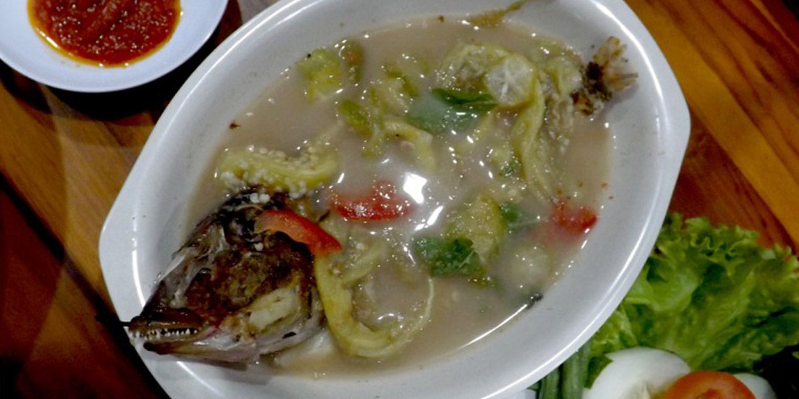
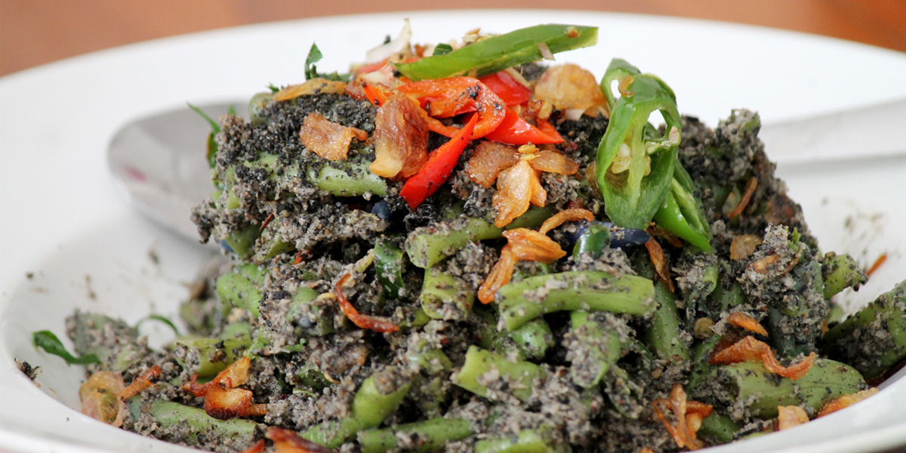
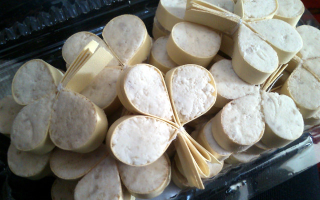

Makanan khas daeraSumbawa memiliki cita rasa unik dan autentik, sehingga sayang untuk dilewatkan. Ada berbagai jenis kuliner Tanah Samawa yang bisa dicoba, mulai dari ayam taliwang sampai sepat, dari yang asam hingga yang manis mari meneganal beberapa makanan khas dari sumbawa,yang wajib kalian coba saat kalian berkunjung ke sumbawa.
-
SEPAT KHAS SUMBAWA

Sepat biasanya menjadi menu wajib masyarakat Sumbawa untuk berbuka puasa saat Ramadhan.Sepat merupakan makanan khas daerah Sumbawa yang memiliki cita rasa segar dan asam Makanan khas daerah Sumbawa yang satu ini memiliki cita rasa yang istimewa dengan aroma wangi karena bahan-bahannya dibakar,Dengan dibakar, aroma bumbunya seperti terong, bawang, cabai, dan kemiri dan bahan utamanya-ikan Sepat-jadi lebih keluar,Sedangkan rasa asam pada Sepat berasal dari jeruk purut atau belimbing wuluh.Jika tidak ada kedua buah tersebut, bisa menggantinya dengan tomat, atau bisa juga dengan mangga muda.Sepat biasanya menjadi menu wajib masyarakat Sumbawa untuk berbuka puasa saat Ramadhan,sepat juga sering di hidangkan dengan kerupuk kulit/ mikong sebagai pelengkap.

Sumbawa memiliki makanan khas yang unik dan lezat yaitu singang. Singang merupakan makanan olahan ikan segar dengan cirik has berkuah kuning. Sepintas singang terlihat seperti gulai ikan, namun memiliki keunikan rasa yaitu asam manis segar dan gurih seperti umumnya makanan khas sumbawa lainnya.Ikan yang disarankan untuk diolah jadi singang, yakni bandeng ataupun kakap. Kenikmatan sajian ini didapat dari bumbu yang terdiri dari berbagai macam rempah. Hal itulah yang bikin tampilan masakan ini mirip gulai ikan dengan rasa asam dan manis sesuai dengan ciri khas kuliner sumbawa.Kuah berwarna kuning amat menggoda selara siapa saja. Warna kuah yang kekuningan dipadu dengan hijau daun kemangi dan merah cabai rawit membuat sajian ini terlihat segar. Asam Jawa dalam kuahnya membuat singang terasa agak asam, menambah selera makan.
Salah satu makanan khas Sumbawa yang di warisi turun temurun adalah gecok. Gecok khas Sumbawa berbahan dasar jeroan yang ditumis dengan beragam bumbu rempah. Jeroan diolah menjadi makanan luar biasa dengan dicampur santan kental dan wijen hingga kuahnya berwarna kehitam-hitaman. Selain penggunaan bahan jeroan juga sebagian menggantinya dengan daging kerbau. Gecok khas Sumbawa biasa pada awalnya merupakan sajian pada acara-acara pesta seperti pernikahan.

Kalau anda sedang wisata ke Pulau Sumbawa, gecok wajib masuk dalam daftar kuliner tradisional yang akan anda coba. Saat ini banyak rumah makan yang menyajikan gecok sebagai menu andalannya. Untuk menikmati Gecok dan makanan Khas sumbawa lainnya anda dapat ke sentra kuliner di Pantai Jempol Sumbawa, Di pantai Goa dan rumah makan di seketir taman Genang Genis Sumbawa.
Penggemar kuliner ayam mungkin sudah tidak asing lagi dengan hidangan yang satu ini. Ayam bakar yang berasal dari Kecamatan Taliwang, Sumbawa Barat ini sudah cukup terkenal baik di Pulau Sumbawa maupun Pulau Lombok. Untuk membuat ayam taliwang, pertama-tama ayam akan dibakar setengah matang. Kemudian, masak bumbu yang terdiri dari, kemiri sangrai, cabai merah, terasi goreng, gula merah, susu cair, dan garam. Selanjutnya, masukan ayam bersama campuran bumbu. Biarkan hingga bumbu meresap ke daging ayam.
Uta Maju Puru berbahan dasar daging rusa, santapan ini sebenarnya adalah kudapan, atau camilan yakni berupa dendeng daging rusa yang diproses melalui pengeringan dan kemudian dipanggang di atas bara, jika dendeng sapi di daerah lain dilengkapi dengan ketumbar dan gula, maka Uta Maju Puru hanya ditaburi garam untuk menikmati cita-rasa yang gurih,Selain di panggang secara utuh di atas bara api, cara lain menikmati makanan ini adalah dengan membakar dendeng, kemudian dicacah dengan batu hingga tercabik, kemudian cabikan daging tadi dipanggang lagi untuk kemudian menjadi santapan.

Manjareal merupakan penganan permen kacang bertekstur keras dan renyah khas Sumbawa dengan rasa yang sangat unik di mulut. Manjareal memiliki sensasi manis dengan rasa kacang yang kuat. Manjareal sangat unik dan cantik secara tampilan. Warnanya putih yang dibungkus secara apik dengan daun lontar,Manjareal dibungkus atau dicetak membentuk bunga dan masih memperlihatkan isinya. Manjareal dibuat dari bahan utama kacang tanah yang dihaluskan. Kacang tanah ini kemudian dimakan dengan gula dan tepung beras atau sagu. Campuran bahan ini diaduk-aduk seperti dalam pembuatan dodol.
Lengkungan daun lontar manjareal sangat mirip dengan bentuk keriting tiga pada kartu remi. Manjareal dibentuk dengan daun lontar yang sudah dikeringkan. Sehelai daun lontar dilengkungkan tiga kali, lalu bagian bawahnya dirapatkan dan diikat dengan benang. Sisa benang dan daun lalu dipotong. Kalau tak mau repot, cetakan manjareal bisa dibeli di pasar yang dapat ditemukan di Sumbawa.Daun lontar tersebut hanya berfungsi sebagai cetakan dan pemanis. Bagian yang bisa dimakan terdapat di antara lengkungan cetakan tersebut. Warnanya putih, teksturnya agak kering dan padat. Untuk menikmatinya, cukup tusuk saja manjareal dengan jari untuk mengeluarkannya dari cetakan.